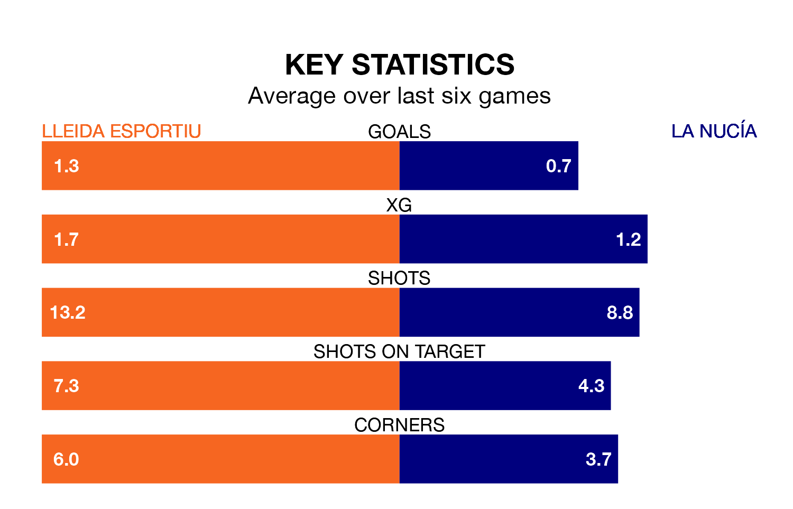

Struggling Lleida Esportiu face La Nucía at Camp d'Esports de Lleida on Sunday looking to build on a win in their last league outing.
After securing all three points with a 0-1 victory over Hércules CF on January 7, Lleida Esportiu sit second in Segunda División RFEF Group 3.
They travel to play a La Nucía side 18th in the standings, who lost in their last match, 1-0 against CF Badalona.
With 10 goals in 17 games so far this season, La Nucía are the league's lowest scorers with 0.6 goals per game. And they are conceding more than average, letting in 27 goals at a rate of 1.6 per game.
Lleida Esportiu, meanwhile, are above average scorers, with 1.5 goals per game, compared to a league average of 1.2. They have conceded 0.8 goals per game.
The home team are in mixed form in Segunda División RFEF Group 3, with three wins and a draw from their last six games.
With a win and a draw over that period, la Nucía's form is much worse – they have taken four points from 18, compared to Lleida Esportiu's 10.
In the last three years, Lleida Esportiu and La Nucía have played each other on three occasions. They won one each, and they drew once.
Their last meeting was on September 3, when Lleida Esportiu won 1-0 away.
Updated: 15:34, 08/01/24